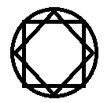

BORDERLAND BORDERLAND
Background Shadowland
Estamos entrando agora no reino de Shadowland. Essas terras são tudo o que é conhecido aqui, não há nada além de suas fronteiras.
A sul, a leste e a oeste estamos cercados pelo bravo oceano, com suas águas mortalmente gélidas, e a norte bloqueados pelas montanhas que se perdem na escuridão.
Assim como do lado de fora, aqui temos dia e noite, porém eles são muito diferentes. Não é a luz que se propaga, afastando a escuridão, mas sim a escuridão que emana, consumindo a luz. É como se o mundo fosse uma grande tela branca manchada por sombras.
Não existe sol, a luz simplesmente existe dando origem ao dia, e a noite chega como uma nuvem negra que surge das montanhas e cobre o reino, que é resistida apenas pelo brilho pálido dá lua, que é o único astro solitário no céu.
Por nada iradiar luz, as únicas sombras que existem são projetadas pelas trevas que há dentro de cada um, e pelas memórias carregadas nas pedras e nas construções que presenciam as atrocidades deste mundo.
Muitos feiticeiros e assassinos, para não revelar as trevas que guardam dentro de si, se marcam com runas com o símbolo de ordem(um circulo com um quadro e um losango sobrepostos), além de outras runas que usam para manipular as sombras e lhes concerder poderes sobrenaturais.
Nunca se sabe a hora em que ela vai chegar, mas quando a noite chega, todos correm para suas casas para se protegerem dos monstros e feras que vêm junto com ela, os únicos que se arriscam são aqueles que têm afinidade com as trevas e os tementes a deusa de prata, que os guarda nas fases em que o astro ainda é capaz de vencer a escuridão.
Background Deuses da Ordem
Deusa de Prata, deusa da lua
Outros nomes: Dama de Prata, Lupa
Símbolo: Coruja
Elemento: Água
Representantes (conexão direta com o deus):
- Profetiza, também conhecida com a voz da lua.
- Corvo prateado, é o arauto da deusa, também conhecido como as mãos da lua.
Gaia, deusa da terra
Outros nomes: Mother-tree
Símbolo: Serpente
Elemento: Terra
Representantes (conexão direta com o deus):
- Árvores (Dríades)
Zirzan, deus da sorte
Símbolo: Raposa
Elemento: Ar
Representantes (conexão direta com o deus):
- Poeira (Silfos)
Horus, deus da punição
Símbolo: Lobo
Elemento: Fogo
Representantes (conexão direta com o deus):
- Montanhas (Oréade)
Hierarquia de poder
Água > Terra > Ar > Fogo > Água
Mecânica de Batalha Regras
Iniciantiva: É baseada na agilidade e definirá a ordem dos ataques.
Reação: Todo jogador tem direito a 1 reação por rodada, e quem está atacando tem vantagem no empate.
As reações de esquiva e bloqueio são um teste de atributo contra o ataque do inimigo:
- Esquivar: teste de atributo baseado na agilidade.
- Bloquear: teste de atributo baseado na força. Se o modificador de força do oponente for maior do que o seu modificador de força, ao bloquear com sucesso, você ainda sofre dano da diferença do modificador (ex: você tem +1 e seu inimigo +2, ao bloquear, você sofre 1 de dano).
- Contra-ataque: se você escolher contra-atacar, você deixará o inimigo fazer o ataque direto contra sua defesa, e caso ele erre você tem a chance de fazer o ataque contra a defesa dele.
Defesa padrão: quando você não reagir ao ataque do inimigo, ele além de ter que passar no teste de atributo no ataque, precisa tirar um dado maior do que sua defesa.
Ataque Furtivo/Flanqueado/Indefeso: quando o ataque for desse tipo a defesa é ignorada, precisando apenas passar no teste de atributo.
- Furtivo: para fazer um ataque furtivo você deve ter um lugar para se esconder, e deve lançar um teste de furtividade, contra a percepção do inimigo. No empate a vantagem é do inimigo.
- Flanqueado: é quando o inimigo já está em combate corpo-a-corpo com um oponente, e você chega do lado oposto para atacá-lo.
- Indefeso: é quando você está caido ou agarrado por outro inimigo.
Idéia Idéia
- Ligação de Shadowland com o universo transcendente
- Shadowland seria o mesmo lugar que borderland
Três possibilidades de conexão
1. O encontro dos universo poderia acontecer no passado do universo transcendente explorando a UEID(Unidade de Extração Interdimensional). Neste contexto os nimirianos(ou acadianos) encontrariam viajantes que estariam explorando o lugar para entender o que poderiam extrair, e após interrogar e ver a capacidade e intenções do viajante, motivaria todos os acontecimentos da primeira temporada. E acabaria a temporada 1 com uma extração interdimensional
2. O acontecimento pode ser ao final do segundo livro após terem vencido Elara, e terem estirpado o mal de borderland, mas teria menos conteúdo a ser explorado
Seguindo a opção 1 que é mais promissora, com eles conseguindo impedir as extrações, poderia ser explorados os testes falhos dos humanos com os experimento A1 - A2 - A3, principalmente com os psicologicamente alterados, com Fury, Soturno, etc, com a possibilidade dos habitantes de shadowland invadirem o mundo normal e levar a magia para lá, tendo a possibilidade de com o passar dos anos a civilização de shadowland sucumbir ao esquecimento e o continente ser dominado pela floresta. Tendo ao final o encontro com os 3 seven ability banidos.
3. Realidade circular, ao mesmo tempo que o acontecimento é posterior a derrota, começa a acontecer os acontecimentos de extração do passado.
História da Criação
No inicio só havia trevas, e sons estranhos soavam no ar, mais como ranjidos, e notas desconexas sem qualquer harmônia, mas com o tempo algumas notas começaram a se encontrar, e criar um sentido, entre si, criando melodias, das quais o ambiente ao seu redor reagia. Com a ordem começou a surgir as formas, com as ondas sonoras esculpindo o desenho das montanhas, os limites das terras e dos mares, e centenas de árvores, das quais iluminaram a criação com uma bioluminessencia.
Uma grande árvore(Mother-tree) conectava toda as outras e toda vida no grande bosque da criação, com a sua luz reagindo as notas da criação.
Mas o caos primordial ainda existia no grande abismo, de onde saiam sombras que tentava com todas suas forças resistir a luz e a ordem. Com a evolução da vida, até as sombras ganharam suas formas, mas por sua vez mostruoso e com sede do caos.
Das raizes da árvore-mãe surgiram os primeiros humanos, que precisaram ser centenas de vezes recriados até que fossem capazes de se defender das sombras do abismo.
Quando finalmente a humanidade venceu as sombras e selou o abismo, a civilização começou a prosperar, e com o crescimento das comunidades que vieram a se tornar cidades, e reinos, a custas da natureza, a mother-tree se calou, e hoje está adormecida sob o castelo de nimir, e por isso se tornou tão dificil ver as luzes das árvores, sua dança, ou ouvir seus segredos.